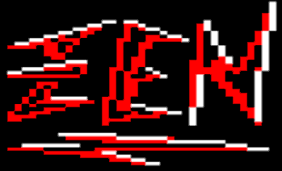
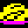
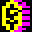
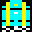
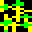
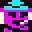
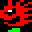
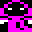
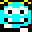
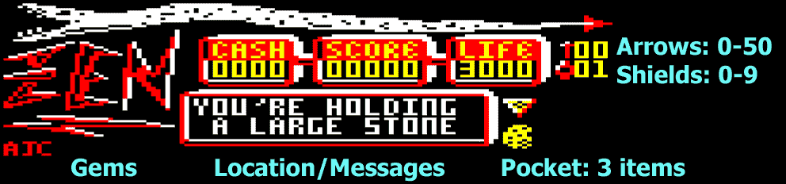

Zen is a huge arcade adventure game for the 32K BBC Model B micro with a floppy disk drive.
You have been wrongly imprisoned by Zen and must find a way to escape his Kingdom, a very difficult and dangerous task!
Screenshots
Download and Run
The best way to run this game is in the excellent BeebEm emulator on a Windows PC:
- make BeebEm's disk 0 writable by unchecking File -> Disc Options -> Write Protect 0.
- download Zen.2012.REL.zip then unzip the SSD and run it via File -> Run Disc.
- optionally, to speed up moving between rooms uncheck Sound -> Sound Effects -> Disc Drives.
Player's Guide
Press 1 (novice), 2 (adept) or 3 (expert) to start in the Prisons of Castle Zen with 2, 1 or 0 shields,
or press L to resume a saved game.
On your way you'll encounter various objects and monsters, the most common are explained here:


Fighting monsters is hungry work so eat plenty of food to stay alive 'cos if your life hits zero it's game over.


Collect coins, money-bags and treasure-chests to boost your cash reserves.
Local currency is the Zenq, accepted by all vending machines!

A pile of 10 silver-tipped arrows, deadly to most monsters. Your quiver can hold up to 50.
A random potion can help or hinder so is it worth the risk ?
A door's number is found by walking up to it. Only a key of the same number will unlock it.

Guards move to a set pattern.
Because they're actually ghosts of past soldiers they can only be killed by silver-tipped arrows
(some guards are immune). Guards can pass through solid matter.




Ghouls appear randomly throughout the kingdom and though shortlived, pose a serious threat to your health.
They are destroyed by any contact with solid objects and on dying may turn into ghosts.
Ghosts are very dangerous and should be avoided at all costs.
They follow you relentlessly and cannot be destroyed.
Walk up to a vending machine to see the amount of life-points sold per Zenq, from 1 to 4.
After a short pause the amount of health to buy is shown.
Press up/down to vary the amount and left/right to cycle between arrows, shields and health.
Press
RETURN to make the transaction.
There are many other object scattered around and it's up to you to discover how to use them.
If you're having trouble staying alive then try improving your playing technique (no major spoilers).
Keyboard Controls
| Key |
Action |
| Z |
left |
| X |
right |
| : |
up |
| / |
down |
| < > |
pocket left/right |
| SPACE |
pickup/drop |
| U |
use |
| E |
examine |
| RETURN |
fire |
| f0 (f10 in BeebEm) |
save position. Load by pressing 'L' on splash page |
| ESCAPE |
quit |
| S |
sound on |
| Q |
sound off |
| COPY |
pause |
| DELETE |
resume |
Panel Layout

Saving multiple game positions for backtracking
Zen allows only a single saved game position i.e. pressing f0 will overwrite the previously saved position,
so you might be tempted to use BeebEm's File -> Load/Save State command.
Unfortunately this won't work because Zen saves room/object state to disc.
The proper way to save a position is to take a copy of Zen.2012.REL.ssd after saving position and rename it
to something descriptive. Then simply restore this SSD if you need to backtrack.
Support
If you're having technical issues or you're stuck in the game with no clue how to proceeed then
please visit the Zen discussion thread on the Stairway to Hell forums.
Development Background
I started writing Zen in 1987 when I was 17 and finished a a demo version in 1988.
Unfortunately it never got released probably because it was insanely difficult
plus it had a bug which made it impossible to complete!
Also the Atari ST and Commodore Amiga were increasingly dominating the home computer scene.
The original 25-year-old floppy disks were barely readable so rescuing the source was a close run thing.
Indeed, one of the source files was unreadable but amazingly I discovered a hard-copy so was able
to resuce it by OCR from a scan !
I spent 3 months of Summer 2012 hacking the source to bring it up to release quality by
fixing bugs, improving graphics/puzzles and layout of some rooms, and by adding 3 difficulty levels.
Zen is written in 6502 assembler.
Interestingly, since Zen makes heavy use of the disk it actually runs better from a virtual SSD in BeebEm
compared with a physical disk drive!
Some technical highlights:
- rooms are stored on disk and read in dynamically
- some program code is swapped in and out of memory from disk at runtime
- a screen split allows up to 8 colours in mode 5 (normally just 4 colours)
Enjoyware
The full uncrippled game is freely available to download and play.
However if you do enjoy playing it then please consider buying it.
The cost is only four pounds (4 GBP), just enough for a beer and to help keep this site running.
Simply click the button below and follow the Paypal instructions, your gesture is very much appreciated!
Last update: Nov 2012
© 2012 dizzib